<div class="container">
  <div id="contents" class="col-md-12 main-content"><h1 xmlns="http://www.w3.org/1999/xhtml" id="toc-id-8">Elektrochemiese selle en batterye</h1>
   
    <figure xmlns="http://www.w3.org/1999/xhtml"> 

    <figcaption>Figuur 1: Verskillende toestelle wat elektrochemiese selle of batterye van selle gebruik.
Een van hierdie toestelle gebruik ook ’n fotovoltaïese sel. Kan jy sê watter een?
</figcaption></figure><h2 xmlns="http://www.w3.org/1999/xhtml" id="toc-id-9">Elektrochemiese selle en batterye</h2>

    <p xmlns="http://www.w3.org/1999/xhtml" class="x--Body-Text">In hoofstuk 7 het jy selle soos die een in figuur 2 gebruik.
</p>

    <figure xmlns="http://www.w3.org/1999/xhtml">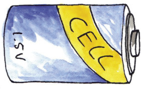
    <figcaption>Figuur 2</figcaption></figure><p xmlns="http://www.w3.org/1999/xhtml" class="x--Body-indent">Die selle het ’n positiewe terminaal en ’n negatiewe terminaal. Die positiewe
terminaal is die knop aan die bokant van die sel, en die negatiewe terminaal is die
plat kant van die sel. Die terminale word + vir die positiewe terminale en – vir die
negatiewe terminale gemerk. Vind die + en – merke op die sel of battery.
</p>

    <p xmlns="http://www.w3.org/1999/xhtml" class="x--Body-indent">Die stroomspanning van ’n sel word ook daarop aangedui. Vind die nommer op
die sel of battery. Dit sal 1,5 V of 9 V wees. Die stroomspanning is die hoeveelheid
energie wat die sel aan elektrisiteit kan gee.
</p>

    <p xmlns="http://www.w3.org/1999/xhtml" class="x--Body-indent">In Natuurlike Wetenskap gaan jy hierdie jaar leer oor chemiese reaksies. ’n
“Elektrochemiese sel” gebruik chemiese reaksies tussen die stowwe binne ’n sel
om energie aan elektrisiteit te gee.
</p>

    <h3 xmlns="http://www.w3.org/1999/xhtml">Wat is binne-in ’n sel?</h3>

    <p xmlns="http://www.w3.org/1999/xhtml" class="x--Body-Text">Jy kan twee tipes elektrochemiese selle koop. Die diagram hieronder word ’n
“oopwerkaansig-diagram” genoem. Die sel is so geteken dat dit lyk asof die buite-
bedekking weggesny is om aan jou die binnekant van die sel te wys.
</p>
<figure xmlns="http://www.w3.org/1999/xhtml">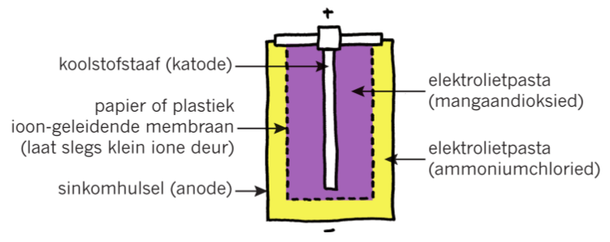 

    <figcaption>Figuur 3: ’n Sink-koolstof sel
</figcaption></figure><figure xmlns="http://www.w3.org/1999/xhtml">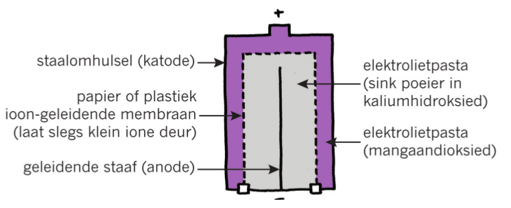 

    <figcaption>Figuur 4: ’n Alkaliese sel
Die elektroliete in die
Die sink-koolstofsel in
</figcaption></figure><p xmlns="http://www.w3.org/1999/xhtml" class="x--Body-indent-1-3">Die sink-koolstofsel in figuur 3 is ’n goedkoper tipe sel wat nie so lank hou soos wat ’n alkaliese sel hou nie. Albei tipe selle het ’n “positiewe elektrode” en ’n “negatiewe elektrode”. Hierdie elektrodes is ’n stroperige stof wat “<b>elektroliet</b>pasta” genoem word.
</p>

    <div xmlns="http://www.w3.org/1999/xhtml" class="aside">
      <p class="x--Body-box-no-indent">Die <b>elektroliete</b> in die alkaliese sel bevat potassium-hidroksied, wat ’n alkali is. Daarom word dit ’n alkaliese sel genoem.
</p>
    </div>

    <p xmlns="http://www.w3.org/1999/xhtml" class="x--Body-indent">In die sink-koolstofsel is die negatiewe elektrode van sinkmetaal gemaak.
Hierdie sink word gevorm in die omhulsel wat die elektrolietpasta bevat. Aan die
buitekant van die sink-omhulsel is ’n dun staalomhulsel sodat jy nie die sink kan
sien nie.</p>

    <p xmlns="http://www.w3.org/1999/xhtml" class="x--Body-investigation-hanging">1. Watter deel van die sink-koolstofsel is die positiewe elektrode?
</p>
    <hr xmlns="http://www.w3.org/1999/xhtml"/><p xmlns="http://www.w3.org/1999/xhtml" class="x--Body-indent">In die alkaliese sel in figuur 4 is die staalomhulsel die positiewe elektrode. Die
knop bokant die sel is deel van die omhulsel. Die omhulsel word gewoonlik in
plastiek toegedraai, maar nie die knop aan die bokant nie.
</p>

    <p xmlns="http://www.w3.org/1999/xhtml" class="x--Body-investigation-hanging">2. Watter deel van die alkaliese sel is die negatiewe elektrode?
</p>
    <hr xmlns="http://www.w3.org/1999/xhtml"/><h3 xmlns="http://www.w3.org/1999/xhtml">Maak ’n sel en ’n battery</h3>

    <p xmlns="http://www.w3.org/1999/xhtml" class="x--Body-text-1-3 para-style-override-24">Hierdie aktiwiteit bestaan uit twee
dele. Eerstens, elke span in die klas
gaan een sel maak. Daarna gaan al
die spanne hulle selle koppel om ’n
battery te maak en ’n gloeilamp te laat
skyn.
</p>

    <div xmlns="http://www.w3.org/1999/xhtml"><figure>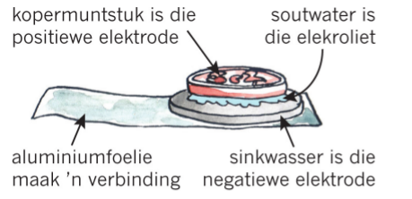

      
        <figcaption>Figuur 5: ’n Tuisgemaakte sel
</figcaption></figure></div>

    <p xmlns="http://www.w3.org/1999/xhtml" class="x--Body-Text para-style-override-3"><b>Elke span benodig:
</b></p>

    <ul xmlns="http://www.w3.org/1999/xhtml"><li class="x--Body-text-bullet">twee 5-sent muntstukke (of stukke koper wat min of meer dieselfde grootte is),
</li>

      <li class="x--Body-text-bullet">’n <b>gegalvaniseerde</b> metaalwasser (’n wasser is ’n skyf met ’n gat in die middel),
</li>

      <li class="x--Body-text-bullet">’n stuk lap of karton wat min of meer dieselfde
grootte, of effens kleiner as die 5-sent muntstuk is. Hierdie lap of karton moet
met soutwater natgemaak word,


        <div class="aside"> <p class="x--Body-box-no-indent"><b>Galvaniseer</b> beteken dat dit met sink bedek is.
</p>
        </div> 
      </li>

      <li class="x--Body-text-bullet">’n stuk foelie, min of meer die grootte van twee vingers langs mekaar, in die
lengte af van punt tot punt, en
</li>

      <li class="x--Body-text-bullet">kleefband.
</li>
    </ul><p xmlns="http://www.w3.org/1999/xhtml" class="x--Body--above"><b>Jou onderwyser benodig:
</b></p>

    <ul xmlns="http://www.w3.org/1999/xhtml"><li class="x--Body-text-bullet"> ’n voltmeter of multimeter,
</li>

      <li class="x--Body-text-bullet">’n bak met soutwater (1 teelepel sout in 100 ml water),
</li>

      <li class="x--Body-text-bullet">’n gloeilamp,
</li>

      <li class="x--Body-text-bullet">’n gonser wat met 3 volt sal werk, en
</li>

      <li class="x--Body-text-bullet">ses kaaimansklemdrade, drie wat met rooi plastiek geïsoleer is en drie wat met
swart plastiek geïsoleer is.
</li>
    </ul><p xmlns="http://www.w3.org/1999/xhtml" class="x--Body--above"><b>Deel 1: Maak jou sel
</b></p>

    <ul xmlns="http://www.w3.org/1999/xhtml"><li class="x--Body-text-bullet">Vou die foelie in die lengte af sodat jy ’n lang strook het wat dubbel in dikte is.
Plaas dit op die tafel. Die foelie is van aluminium gemaak wat ’n goeie geleier
van elektrisiteit is.
</li>

      <li class="x--Body-text-bullet">Druk soutwater op die lap uit.
</li>

      <li class="x--Body-text-bullet">Plaas die sink-wasser op die foelie, die nat lap op die wasser, en die koper
muntstuk bo-op die nat lap.
</li>

      <li class="x--Body-text-bullet">Die lap mag nie oor die sink-wasser hang nie, en die water mag nie langs die
kante van die muntstuk en die wasser afloop nie. Indien dit sou gebeur, sal daar
’n kortsluiting tussen die koper en sink plaasvind, en dit wil jy nie laat gebeur
nie.
</li>
    </ul><p xmlns="http://www.w3.org/1999/xhtml" class="x--Body-indent">Die sink-wasser is jou <i>negatiewe elektrode</i>, die koper muntstukke is jou <i>positiewe
elektrode</i>, en die soutwater is jou <i>elektroliet</i>.
</p>

    <p xmlns="http://www.w3.org/1999/xhtml" class="x--Body-indent">Jy het nou ’n sel gemaak. Die foelie is die negatiewe terminaal waaraan jy die
voltmeter kan koppel.
</p>

    <p xmlns="http://www.w3.org/1999/xhtml" class="x--Body-indent">Vra jou onderwyser om die stroomspanning te meet.
</p>
    
    <p xmlns="http://www.w3.org/1999/xhtml" class="x--Body-Text para-style-override-3"><b>Deel 2: Maak ’n battery
</b></p>

    <p xmlns="http://www.w3.org/1999/xhtml" class="x--Body-indent">Elke span moet hulle selle na die voorste tafel bring en hulle koppel soos wat in
figuur 6 gewys word.
</p>

    <p xmlns="http://www.w3.org/1999/xhtml" class="x--Body-indent">Julle gaan ses selle koppel, alhoewel figuur 4 net vier selle wys om die skets
eenvoudiger te maak.
</p>

      <figure xmlns="http://www.w3.org/1999/xhtml">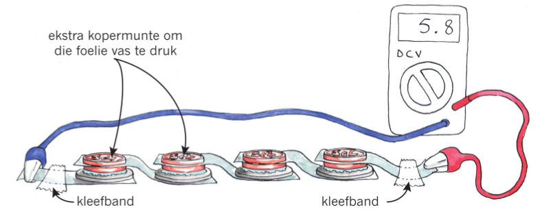 

    <figcaption>Figuur 6: Koppel selle in serie om ’n battery te maak
</figcaption></figure><p xmlns="http://www.w3.org/1999/xhtml" class="x--Body-indent"><span>Jy het twee 5 sent muntstukke. Die eerste een is die positiewe elektrode, en die
tweede een word gebruik om die foelie teen die eerste muntstuk plat te druk sodat
dit goeie kontak maak.
</span></p>

    <p xmlns="http://www.w3.org/1999/xhtml" class="x--Body-indent">Gebruik kleefband om die foelie aan die tafel vas te plak en om die drade aan die
punte vas te plak. Die punte van die foelie is jou terminale.
</p>

    <p xmlns="http://www.w3.org/1999/xhtml" class="x--Body-indent">Jou onderwyser gaan die stroomspanning van die eerste battery meet. Met ses selle
sal die stroomspanning van die battery min of meer 6 volt, of effens minder, wees.
</p>


    <p xmlns="http://www.w3.org/1999/xhtml" class="x--Body-indent"><span>Koppel nou die gloeilamp aan die positiewe en negatiewe terminale van die
battery. Skyn die gloeilamp?
</span></p>

    <p xmlns="http://www.w3.org/1999/xhtml" class="x--Body-indent">Koppel ’n gonser aan die positiewe en negatiewe terminale van die battery. Onthou
om die rooi draad aan die positiewe terminaal te koppel. Kan jy ’n geluid hoor?
</p>

    <p xmlns="http://www.w3.org/1999/xhtml" class="x--Body-investigation-hanging">1. <span>Wat is die twee metale wat gebruik word vir die positiewe en negatiewe elektrodes?
</span></p>
    <hr xmlns="http://www.w3.org/1999/xhtml"/><p xmlns="http://www.w3.org/1999/xhtml" class="x--Body-investigation-hanging">2. Hoe verskil die stroomspanning van die battery met die stroomspanning van een sel?
</p>
    <hr xmlns="http://www.w3.org/1999/xhtml"/><p xmlns="http://www.w3.org/1999/xhtml" class="x--Body-Text para-style-override-3"><b>Batterye verskaf nie die volle aantal volt nie
</b></p>

    <p xmlns="http://www.w3.org/1999/xhtml" class="x--Body-indent">Voordat jy die gloeilamp of die gonser koppel, het die battery energie, maar
verskaf nie ’n stroom nie, en die battery se stroomspanning is 5,8 V. Sodra jy die
gloeilamp of gonser koppel en sodra die battery ’n stroom deur die stroombaan
laat vloei, val die stroomspanning tot omtrent 1,8 V. Dit gebeur omdat die stroom
’n bietjie van sy energie in die battery verloor soos wat dit deur die soutwater en al
die verbindings by die elektrodes vloei. Jy noem hierdie effek “interne weerstand”
van die battery.
</p>

  
    <h2 xmlns="http://www.w3.org/1999/xhtml" id="toc-id-10">Herlaaibare batterye</h2>

    <h3 xmlns="http://www.w3.org/1999/xhtml">Motorbatterye is herlaaibaar</h3>

    <figure xmlns="http://www.w3.org/1999/xhtml">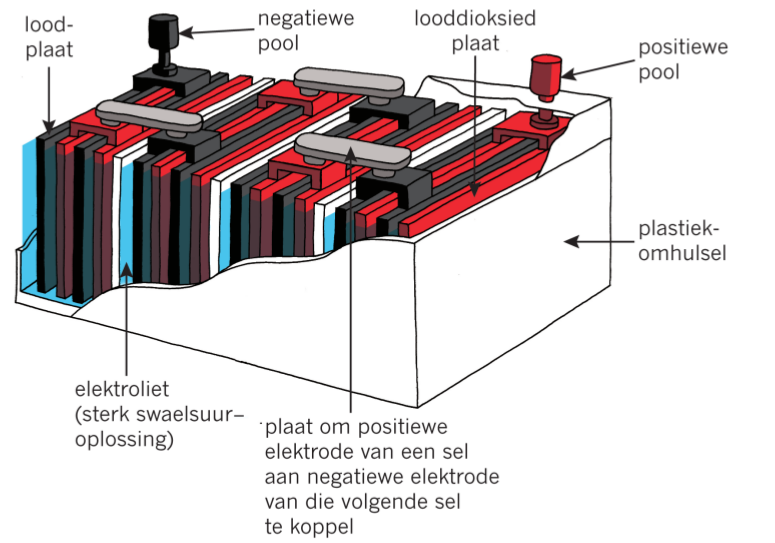
    <figcaption>Figuur 7: ’n Motorbattery
</figcaption></figure><div xmlns="http://www.w3.org/1999/xhtml">
   <figure>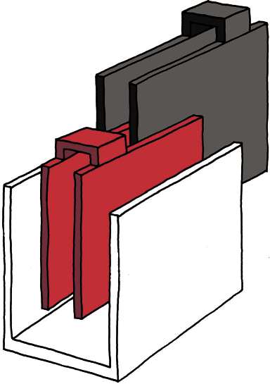

      
        <figcaption>Figuur 8: Een van die selle in ’n motorbattery
nadat dit uitmekaar gehaal is
</figcaption></figure></div>

    <p xmlns="http://www.w3.org/1999/xhtml" class="x--Body-indent">Figure 7 en 8 wys die binnekant van ’n motorbattery. Die kleur rooi word
gebruik om die positiewe elektrodes te wys en die kleur donkergrys word
gebruik om die negatiewe elektrodes te wys. Die kleur blou word gebruik om die
vloeistofelektroliete aan te wys. Die elektrodes en elektroliete het nie werklik
hierdie kleure nie; alles binne ’n battery lyk meestal grys.
</p>

    <p xmlns="http://www.w3.org/1999/xhtml" class="x--Body-indent">’n Motorbattery het ses selle en kan ’n energie van tot en met 12 volt gee. Om die
diagram in figuur 7 eenvoudig te hou, word slegs vier selle gewys.
</p>

    <p xmlns="http://www.w3.org/1999/xhtml" class="x--Body-investigation-hanging para-style-override-13">1. Watter tipe diagram is figuur 7?
</p>
    <hr xmlns="http://www.w3.org/1999/xhtml"/><p xmlns="http://www.w3.org/1999/xhtml" class="x--Body-investigation-hanging para-style-override-13">2. Waarvan is die positiewe elektrode van elke sel gemaak?
</p>
    <hr xmlns="http://www.w3.org/1999/xhtml"/><p xmlns="http://www.w3.org/1999/xhtml" class="x--Body-investigation-hanging para-style-override-13">3. Watter tipe elektroliet is tussen die elektrodes?
</p>
    <hr xmlns="http://www.w3.org/1999/xhtml"/><p xmlns="http://www.w3.org/1999/xhtml" class="x--Body-investigation-hanging para-style-override-13">4. Waarvan is die negatiewe elektrode gemaak?
</p>
    <hr xmlns="http://www.w3.org/1999/xhtml"/><p xmlns="http://www.w3.org/1999/xhtml" class="x--Body-investigation-hanging para-style-override-13">5. Is die selle in ’n motorbattery in serie of in parallel gekoppel?

 </p>
    <hr xmlns="http://www.w3.org/1999/xhtml"/><p xmlns="http://www.w3.org/1999/xhtml" class="x--Body-investigation-hanging para-style-override-13">6.’n Motor benodig 12 volt en ’n baie sterk stroom om die aansitmotor te draai
en die enjin te laat werk. Op koue oggende wil ’n motor soms nie aansit nie.
’n Motorwerktuigkundige kan die battery toets en sê: “Daar is een dooie sel in
hierdie battery”. Indien die battery ’n dooie sel het, watter stroomspanning sal
die battery gee?</p>
    <hr xmlns="http://www.w3.org/1999/xhtml"/><p xmlns="http://www.w3.org/1999/xhtml" class="x--Body-investigation-hanging para-style-override-13">7. Op ’n voltmeter kan die battery dalk wys dat dit 12 volt sal uitgee, maar
wanneer jy probeer om die motor aan te skakel, wil dit nie aanskakel nie. Gee
’n moontlike rede waarom die battery nie sterk genoeg is om die motor aan te
skakel nie.
</p>
    <hr xmlns="http://www.w3.org/1999/xhtml"/><p xmlns="http://www.w3.org/1999/xhtml" class="x--Body-investigation-hanging para-style-override-13">8. Wat kan jy meet om jou idee mee te toets?
</p>
    <hr xmlns="http://www.w3.org/1999/xhtml"/><p xmlns="http://www.w3.org/1999/xhtml" class="x--Body-indent para-style-override-13">’n Motorbattery is anders as die selle en batterye wat ons normaalweg koop.
Wanneer ons al die energie uit die battery geneem het, kan ons die battery
weer herlaai en weer energie aan dit teruggee. ’n Motor het ’n “generator” of
’n “alternator” wat, terwyl jy die motor bestuur, energie van die enjin neem en
aan die battery gee. Jy sal in die volgende hoofstuk meer leer van generators. ’n
Selfoonbattery is ook ’n herlaaibare battery.
</p>

    
    <h3 xmlns="http://www.w3.org/1999/xhtml">Batterye met selle in serie of in paralle</h3>

    <p xmlns="http://www.w3.org/1999/xhtml" class="x--Body-Text">In hoofstuk 7 het jy geleer hoe om gloeilampe in serie of in parallel te koppel. Jy
kan <i>selle</i> ook in serie of in parallel koppel. Jy mag dalk deurmekaar raak met die
idee van “gloeilampe in serie” en “selle in serie”. Kyk na die twee figure hieronder.
</p>

    <div xmlns="http://www.w3.org/1999/xhtml"><figure>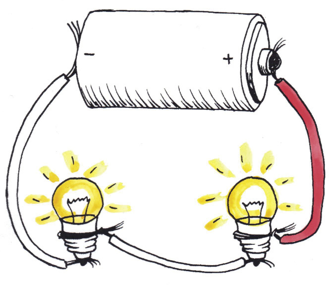
    
    <figcaption>Figuur 9: Gloeilampe in serie 
</figcaption></figure><figure>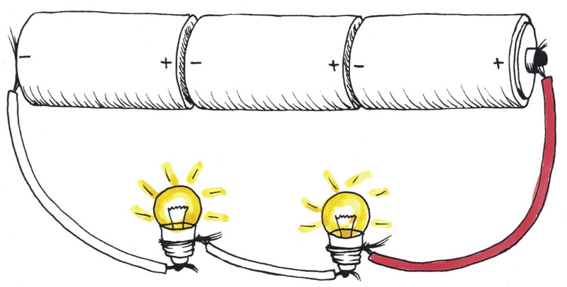
    
    <figcaption>Figuur 10:
    Selle in serie
</figcaption></figure></div>


    <p xmlns="http://www.w3.org/1999/xhtml" class="x--Body-indent">Die gloeilampe in figuur 10 skyn helderder as die in figuur 9 omdat hulle die
4,5 V van die selle in serie deel; hulle kry dus 2,25 V elk.
</p>

    <p xmlns="http://www.w3.org/1999/xhtml" class="x--Body-indent">Jy mag dalk ook deurmekaar raak tussen “gloeilampe in parallel” (sien hoofstuk
7) en “selle in parallel”.
</p>

    <div xmlns="http://www.w3.org/1999/xhtml">
      
     <figure>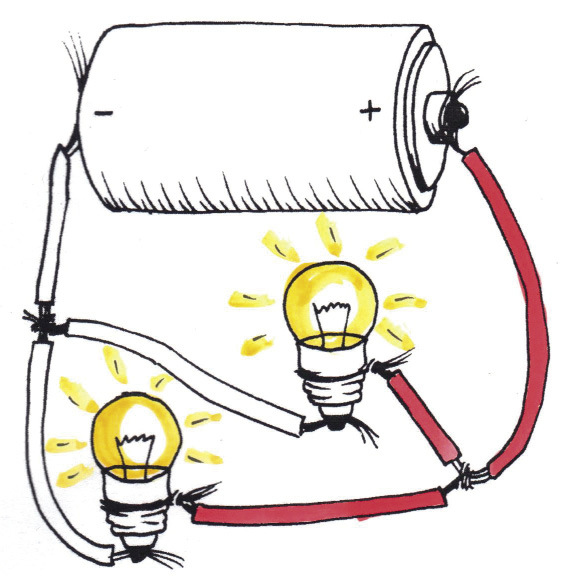


    <figcaption>Figuur 11: Gloeilampe in parallel 
</figcaption></figure><figure>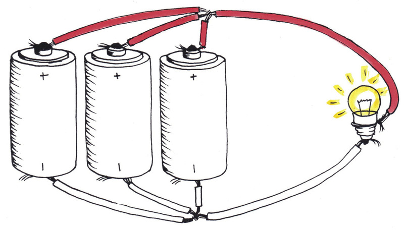
    
    <figcaption>Figuur 12:
    Selle in parallel
</figcaption></figure></div>
    <p xmlns="http://www.w3.org/1999/xhtml" class="x--Body-indent-1-3 para-style-override-28">In figure 11 en 12 kry elke gloeilamp
1,5 V. Daarom skyn die gloeilampe in
hierdie figure helderder as die in figuur
9 (0,75 V per gloeilampe), maar flouer as
die in figuur 10 (2,25 V per gloeilamp).
</p>

    <div xmlns="http://www.w3.org/1999/xhtml"><figure>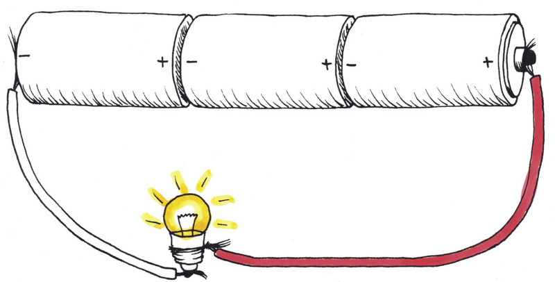

      
        <figcaption>Figuur 13</figcaption></figure></div>

    <p xmlns="http://www.w3.org/1999/xhtml" class="x--Body-investigation-hanging">1. Vergelyk die stroombane in figure 12 en 13. Elke stroombaan het drie selle en
een gloeilamp, maar die komponente is verskillend gekoppel.
</p>

    <p xmlns="http://www.w3.org/1999/xhtml" class="x--Body-investigation-hanging-a-">(a) In watter stroombaan sal die gloeilamp die helderste skyn? Verduidelik jou
antwoord.
</p>
    <hr xmlns="http://www.w3.org/1999/xhtml"/><p xmlns="http://www.w3.org/1999/xhtml" class="x--Body-investigation-hanging-a-">(b) In watter stroombaan sal die gloeilamp vir die langste tydperk skyn voordat
die selle “dood” of “pap” is. Verduidelik jou antwoord.
</p>
    <hr xmlns="http://www.w3.org/1999/xhtml"/><h2 xmlns="http://www.w3.org/1999/xhtml" id="toc-id-11">Fotovoltaïese selle</h2>

    <p xmlns="http://www.w3.org/1999/xhtml" class="x--Body-text-1-3">Hierdie foto wys ’n tipe energie-insettoestel waarvan
jy in hoofstuk 7 geleer het. In hierdie toestel kom die
energie nie van chemiese reaksies tussen chemikalieë
nie; die energie word van lig verkry. Hierdie toestel
word ’n fotovoltaïese sel genoem. Fotovoltaïese kom
van die woord “foto” wat “lig” beteken en “voltaïes” wat
beteken dat jy stroomspanning van hierdie toestel kan
verkry.
</p>

    <p xmlns="http://www.w3.org/1999/xhtml" class="x--Body-indent-1-3">Die swart dele in hierdie foto is ’n spesiale stof wat
’n semi-geleier genoem word. Hierdie semi-geleierstof
word van dun lae gemaak, amper soos dun lae
plastiek wat bo-op mekaar geplaas word. Die positiewe ladings kom aan die een kant bymekaar en die negatiewe ladings aan die ander kant. </p>

    <div xmlns="http://www.w3.org/1999/xhtml"><figure>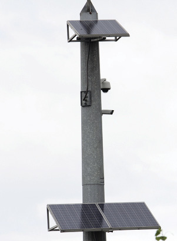

      
        <figcaption>Figuur 14: Fotovoltaïese selle op ’n paal
</figcaption></figure></div>

    <p xmlns="http://www.w3.org/1999/xhtml" class="x--Body-indent">Wanneer ladings op hierdie wyse geskei is, is daar ’n potensiale energie tussen
hulle. Indien jy drade aan die positiewe en die negatiewe kante koppel, sal ’n
lading deur ’n uitsettoestel soos ’n gloeilamp, gonser of motor vloei.
</p>

    <p xmlns="http://www.w3.org/1999/xhtml" class="x--Body-indent">Mense stoor gereeld die elektriese energie wat deur fotovoltaïese selle opgewek
word in ’n herlaaibare elektrochemiese battery. Die fotovoltaïese selle wek
gedurende die dag wanneer die son skyn, energie op en hierdie energie word dan
in ’n herlaaibare battery gestoor. Wanneer dit donker is, wek die fotovoltaïese selle
nie energie op nie. Mense kan wel die elektriese energie wat in die herlaaibare
battery gestoor is, gebruik om krag aan ligte en ander toestelle te gee.
</p>

    <p xmlns="http://www.w3.org/1999/xhtml" class="x--Body-Text para-style-override-3"><b>Waar gebruik ons fotovoltaïese batterye?
</b></p>

    <p xmlns="http://www.w3.org/1999/xhtml" class="x--Body-indent-1-3 para-style-override-29">Dalk het iemand in die klas ’n sakrekenaar
wat ’n klein fotovoltaïese battery gebruik.
Wanneer jy die fotovoltaïese sel in die son
hou, sal die sakrekenaar aanskakel. Dit
sal selfs werk wanneer jy in die skadu sit
aangesien dit ’n klein batterytjie het wat
die energie stoor.
</p>

    <p xmlns="http://www.w3.org/1999/xhtml" class="x--Body-indent-1-3 para-style-override-30">
    Fotovoltaïese selle kan baie groot wees.
</p>

    <p xmlns="http://www.w3.org/1999/xhtml" class="x--Body-indent">Selfs so groot dat hulle die dak van ’n huis kan bedek. Die fotovoltaïese sel
verkry dan sy elektrisiteit van sonlig. Jy sal dalk ook fotovoltaïese selle buite ’n
winkel sien waar jy jou selfoon kan herlaai.
</p>

    <div xmlns="http://www.w3.org/1999/xhtml"><figure>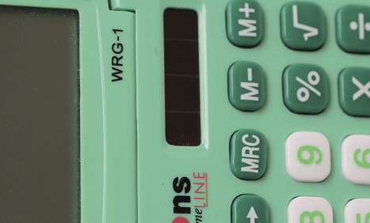

      
        <figcaption>Figuur 15: Fotovoltaïese selle in ’n sakrekenaar
</figcaption></figure></div>

    <p xmlns="http://www.w3.org/1999/xhtml" class="x--Body-investigation-hanging">1. <span>Waarom het die winkel fotovoltaïese selle aan die buitekant in plaas van aan die
binnekant?
</span></p>
    <hr xmlns="http://www.w3.org/1999/xhtml"/><p xmlns="http://www.w3.org/1999/xhtml" class="x--Body-investigation-hanging">2. Aan watter kant van die dak van ’n huis sal jy fotovoltaïese selle plaas?
Waarom?
</p>
    <hr xmlns="http://www.w3.org/1999/xhtml"/><h3 xmlns="http://www.w3.org/1999/xhtml">Wat het jy geleer?</h3>

    <p xmlns="http://www.w3.org/1999/xhtml" class="x--Body-investigation-hanging">1. Voltooi die volgende sin:</p><p xmlns="http://www.w3.org/1999/xhtml">
 ’n ............
reaksie binne ’n elektrochemiese sel verskaf ............
energie.
</p>

    <p xmlns="http://www.w3.org/1999/xhtml" class="x--Body-investigation-hanging">2. Watter tipe sel gebruik nie chemiese reaksies om energie te produseer nie?
</p>
    <hr xmlns="http://www.w3.org/1999/xhtml"/><p xmlns="http://www.w3.org/1999/xhtml" class="x--Body-investigation-hanging--1-3- para-style-override-32">3.
    Wanneer jy die terminale van selle
in serie koppel, koppel jy die positief
aan die negatief aan die positief aan
die negatief ensovoorts. Die selle hoef
nie kop-aan-stert te lê nie, hulle kan
langs mekaar lê. Teken drade tussen die
terminale van hierdie selle om aan te dui
hoe jy hulle in serie sou koppel.
</p>

    <div xmlns="http://www.w3.org/1999/xhtml" class="Basic-Text-Frame frame-129">
      <table id="table-16" class="Basic-Table"><tbody><tr class="Row-Column-128"><td class="None cell-style-override-3">
      <figure> 
              </figure></td>
          </tr></tbody></table></div>
    <hr xmlns="http://www.w3.org/1999/xhtml"/><p xmlns="http://www.w3.org/1999/xhtml" class="x--Body-investigation-hanging">4. Indien jy drie 1,5 V selle in serie koppel, watter stroomspanning sal die battery
gee?
</p>
    <hr xmlns="http://www.w3.org/1999/xhtml"/><p xmlns="http://www.w3.org/1999/xhtml" class="x--Body-investigation-hanging--1-3- para-style-override-33">5.
    Teken drade tussen die
terminale van hierdie selle om te
wys hoe jy hulle in parallel sou
koppel.
</p>

    <p xmlns="http://www.w3.org/1999/xhtml" class="x--Body-investigation-hanging--1-3- para-style-override-33">6.
    Teken drade tussen die
terminale van hierdie selle om te
wys hoe jy hulle in parallel sou
koppel?
</p>

    <div xmlns="http://www.w3.org/1999/xhtml" class="Basic-Text-Frame frame-129">
      <table id="table-17" class="Basic-Table"><tbody><tr class="Row-Column-128"><td class="None cell-style-override-3">
      <figure>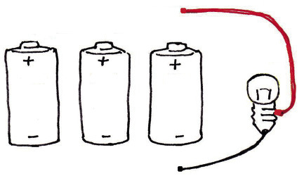 
              </figure></td>
          </tr></tbody></table></div>
    <hr xmlns="http://www.w3.org/1999/xhtml"/><h3 xmlns="http://www.w3.org/1999/xhtml">Iets wat jy by die huis kan probeer</h3>

    <div xmlns="http://www.w3.org/1999/xhtml" class="extension">
      <p class="x--Body-opener">Jy kan ’n sel maak deur gebruik te maak van 
  ’n suurlemoen of ’n aartappel. Jy het ’n stuk 
        sinkbedekte metaal en ’n stuk koper nodig. 
          Hierdie selle sal op dieselfde wyse werk as wat 
          die sel in figuur 5 gewerk het. Die suurlemoen 
          of aartappel het dieselfde funksie as die stuk lap of karton wat met soutwater natgemaak is.
Die suurlemoen of aartappel is die elektroliet
waardeur sekere klein ione kan beweeg om die
stroombaan te voltooi. Hulle is ook membrane
wat ander, groter ione (metaal ione) verhoed
om van een elektrode na die ander te beweeg.

</p>
    

    <div class="Basic-Text-Frame frame-133"><figure> 

      <figcaption>Figuur 16: ’n Sel wat gemaak is deur ’n 
    suurlemoen te gebruik 
</figcaption></figure></div>

      <div>
      <figure>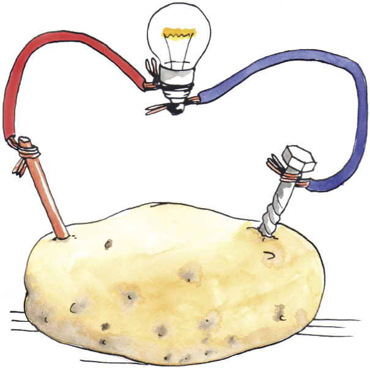 

      <figcaption>Figuur 17: ’n Sel wat gemaak is deur ’n aartappel
 te gebruik
</figcaption></figure></div>
  </div>
    <h3 xmlns="http://www.w3.org/1999/xhtml">Volgende week</h3>

    <p xmlns="http://www.w3.org/1999/xhtml" class="x--Body-Text">Volgende week gaan jy leer hoe elektrisiteit opgewek en deur die land versprei
word. Jy gaan ook leer van die omgewing en die sosiale impak wat elektrisiteit-
opwekking het.
</p>

    <p xmlns="http://www.w3.org/1999/xhtml" class="x--Body-indent">Lees weer waar elektrisiteit vandaan kom in graad 8, boek 1, hoofstuk 10
op bladsye 141 tot 148. Die omgewingsimpak van koolstof en ander brandstof
verbranding word ook bespreek.
</p>


  </div>
</div>